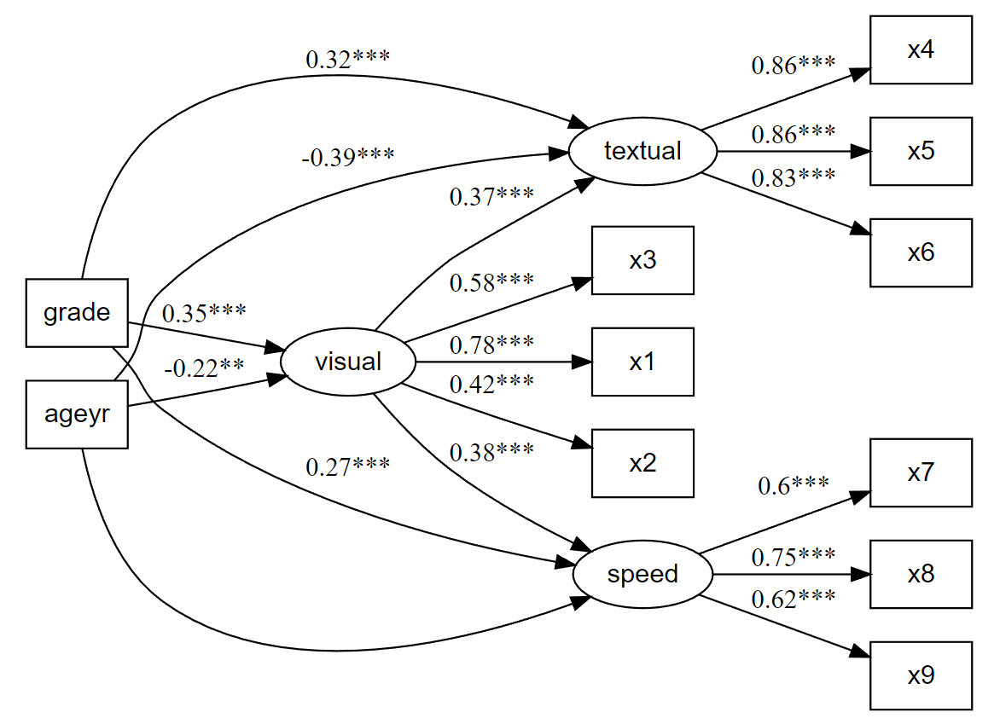

Affords an alternative, vector-based syntax to lavaan, as well as other convenience functions such as naming paths and defining indirect links automatically. Also offers convenience formatting optimized for a publication and script sharing workflow.
Installation
You can install the development version of lavaanExtra like so:
install.packages("lavaanExtra", repos = c(
rempsyc = "https://rempsyc.r-universe.dev",
CRAN = "https://cloud.r-project.org"))Why use lavaanExtra?
- Reusable code. Don’t repeat yourself anymore when you only want to change a few things when comparing and fitting models.
-
Shorter code. Because of point 1, you can have shorter code, since you write it once and simply reuse it. For items with similar patterns, you can also use
paste0()with appropriate item numbers instead of typing each one every time. - Less error-prone code. Because of point 1, you can have less risk of human errors since you don’t have possibly multiple different version of the same thing (which makes it easier to correct too).
- Better control over your code. Because of point 1, you are in control of the whole flow. You change it once, and it will change it everywhere else in the script, without having to change it manually for each model.
- More readable code. Because of point 1, other people (but also yourself) only have to process the information the first time to make sure it’s been specified correctly, and not every time you check the new models.
- Prettier code. Because it will format the model for you in a pretty way, every time. You don’t have to worry about manually making your model good-looking and readable anymore.
- More accessible code. You don’t have to remember the exact syntax (although it is recommended) for it to work. It uses intuitive variable names that most people can understand. This benefit is most apparent for beginners, but it also saves precious typing time for veterans.
CFA example
# Load library
library(lavaan)
library(lavaanExtra)
#> Suggested citation: Thériault, R. (2022). lavaanExtra: Convenience functions for lavaan
#> (R package version 0.0.7) [Computer software]. https://lavaanExtra.remi-theriault.com/
# Define latent variables
latent <- list(visual = paste0("x", 1:3),
textual = paste0("x", 4:6),
speed = paste0("x", 7:9))
# Write the model, and check it
cfa.model <- write_lavaan(latent = latent)
cat(cfa.model)
#> ##################################################
#> # [---------------Latent variables---------------]
#>
#> visual =~ x1 + x2 + x3
#> textual =~ x4 + x5 + x6
#> speed =~ x7 + x8 + x9
# Fit the model fit and plot with `lavaanExtra::cfa_fit_plot`
# to get the factor loadings visually (optionally as PDF)
fit.cfa <- cfa_fit_plot(cfa.model, HolzingerSwineford1939)
#> lavaan 0.6-12 ended normally after 35 iterations
#>
#> Estimator ML
#> Optimization method NLMINB
#> Number of model parameters 21
#>
#> Number of observations 301
#>
#> Model Test User Model:
#> Standard Robust
#> Test Statistic 85.306 87.132
#> Degrees of freedom 24 24
#> P-value (Chi-square) 0.000 0.000
#> Scaling correction factor 0.979
#> Yuan-Bentler correction (Mplus variant)
#>
#> Model Test Baseline Model:
#>
#> Test statistic 918.852 880.082
#> Degrees of freedom 36 36
#> P-value 0.000 0.000
#> Scaling correction factor 1.044
#>
#> User Model versus Baseline Model:
#>
#> Comparative Fit Index (CFI) 0.931 0.925
#> Tucker-Lewis Index (TLI) 0.896 0.888
#>
#> Robust Comparative Fit Index (CFI) 0.930
#> Robust Tucker-Lewis Index (TLI) 0.895
#>
#> Loglikelihood and Information Criteria:
#>
#> Loglikelihood user model (H0) -3737.745 -3737.745
#> Scaling correction factor 1.133
#> for the MLR correction
#> Loglikelihood unrestricted model (H1) -3695.092 -3695.092
#> Scaling correction factor 1.051
#> for the MLR correction
#>
#> Akaike (AIC) 7517.490 7517.490
#> Bayesian (BIC) 7595.339 7595.339
#> Sample-size adjusted Bayesian (BIC) 7528.739 7528.739
#>
#> Root Mean Square Error of Approximation:
#>
#> RMSEA 0.092 0.093
#> 90 Percent confidence interval - lower 0.071 0.073
#> 90 Percent confidence interval - upper 0.114 0.115
#> P-value RMSEA <= 0.05 0.001 0.001
#>
#> Robust RMSEA 0.092
#> 90 Percent confidence interval - lower 0.072
#> 90 Percent confidence interval - upper 0.114
#>
#> Standardized Root Mean Square Residual:
#>
#> SRMR 0.065 0.065
#>
#> Parameter Estimates:
#>
#> Standard errors Sandwich
#> Information bread Observed
#> Observed information based on Hessian
#>
#> Latent Variables:
#> Estimate Std.Err z-value P(>|z|) Std.lv Std.all
#> visual =~
#> x1 1.000 0.900 0.772
#> x2 0.554 0.132 4.191 0.000 0.498 0.424
#> x3 0.729 0.141 5.170 0.000 0.656 0.581
#> textual =~
#> x4 1.000 0.990 0.852
#> x5 1.113 0.066 16.946 0.000 1.102 0.855
#> x6 0.926 0.061 15.089 0.000 0.917 0.838
#> speed =~
#> x7 1.000 0.619 0.570
#> x8 1.180 0.130 9.046 0.000 0.731 0.723
#> x9 1.082 0.266 4.060 0.000 0.670 0.665
#>
#> Covariances:
#> Estimate Std.Err z-value P(>|z|) Std.lv Std.all
#> visual ~~
#> textual 0.408 0.099 4.110 0.000 0.459 0.459
#> speed 0.262 0.060 4.366 0.000 0.471 0.471
#> textual ~~
#> speed 0.173 0.056 3.081 0.002 0.283 0.283
#>
#> Variances:
#> Estimate Std.Err z-value P(>|z|) Std.lv Std.all
#> .x1 0.549 0.156 3.509 0.000 0.549 0.404
#> .x2 1.134 0.112 10.135 0.000 1.134 0.821
#> .x3 0.844 0.100 8.419 0.000 0.844 0.662
#> .x4 0.371 0.050 7.382 0.000 0.371 0.275
#> .x5 0.446 0.057 7.870 0.000 0.446 0.269
#> .x6 0.356 0.047 7.658 0.000 0.356 0.298
#> .x7 0.799 0.097 8.222 0.000 0.799 0.676
#> .x8 0.488 0.120 4.080 0.000 0.488 0.477
#> .x9 0.566 0.119 4.768 0.000 0.566 0.558
#> visual 0.809 0.180 4.486 0.000 1.000 1.000
#> textual 0.979 0.121 8.075 0.000 1.000 1.000
#> speed 0.384 0.107 3.596 0.000 1.000 1.000
#>
#> R-Square:
#> Estimate
#> x1 0.596
#> x2 0.179
#> x3 0.338
#> x4 0.725
#> x5 0.731
#> x6 0.702
#> x7 0.324
#> x8 0.523
#> x9 0.442
# Get nice fit indices with the `rempsyc::nice_table` integration
nice_fit(fit.cfa, nice_table = TRUE)
SEM example
Note that that latent variables have been defined above, so we can reuse them as is, without having to redefine them.
# Define our other variables
M <- "visual"
IV <- c("ageyr", "grade")
DV <- c("speed", "textual")
# Define our lavaan lists
mediation <- list(speed = M, textual = M, visual = IV)
regression <- list(speed = IV, textual = IV)
covariance <- list(speed = "textual", ageyr = "grade")
# Define indirect effects object
indirect <- list(IV = IV, M = M, DV = DV)
# Write the model, and check it
model <- write_lavaan(mediation, regression, covariance,
indirect, latent, label = TRUE)
cat(model)
#> ##################################################
#> # [---------------Latent variables---------------]
#>
#> visual =~ x1 + x2 + x3
#> textual =~ x4 + x5 + x6
#> speed =~ x7 + x8 + x9
#>
#> ##################################################
#> # [-----------Mediations (named paths)-----------]
#>
#> speed ~ visual_speed*visual
#> textual ~ visual_textual*visual
#> visual ~ ageyr_visual*ageyr + grade_visual*grade
#>
#> ##################################################
#> # [---------Regressions (Direct effects)---------]
#>
#> speed ~ ageyr + grade
#> textual ~ ageyr + grade
#>
#> ##################################################
#> # [------------------Covariances-----------------]
#>
#> speed ~~ textual
#> ageyr ~~ grade
#>
#> ##################################################
#> # [--------Mediations (indirect effects)---------]
#>
#> ageyr_visual_speed := ageyr_visual * visual_speed
#> grade_visual_textual := grade_visual * visual_textual
#> ageyr_visual_speed := ageyr_visual * visual_speed
#> grade_visual_textual := grade_visual * visual_textual
fit.sem <- lavaan(model, data = HolzingerSwineford1939, auto.var = TRUE,
auto.fix.first = TRUE, auto.cov.lv.x = TRUE)
# Get regression parameters only and make it pretty with the `rempsyc::nice_table` integration
lavaan_reg(fit.sem, nice_table = TRUE, highlight = TRUE)
# Get covariance indices and make it pretty with the `rempsyc::nice_table` integration
lavaan_cov(fit.sem, nice_table = TRUE)
# Get nice fit indices with the `rempsyc::nice_table` integration
fit_table <- nice_fit(fit.cfa, fit.sem, nice_table = TRUE)
fit_table
# Save fit table to Word!
save_as_docx(fit_table, path = "fit_table.docx")
# Let's get the indirect effects only and make it pretty with the `rempsyc::nice_table` integration
lavaan_ind(fit.sem, nice_table = TRUE)
# Plot our model
nice_lavaanPlot(fit.sem)
Final note
This is an experimental package in a very early stage. Any feedback or feature request is appreciated, and the package will likely change and evolve over time based on community feedback. Feel free to open an issue or discussion to share your questions or concerns. And of course, please have a look at the other tutorials to discover even more cool features: https://lavaanextra.remi-theriault.com/articles/
Support me and this package
Thank you for your support. You can support me and this package here: https://github.com/sponsors/rempsyc